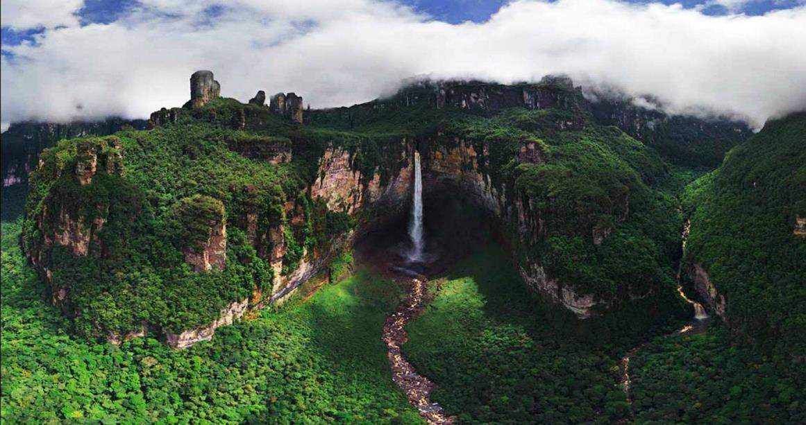

Blog Durazno
Árbol de hasta 6-8 m de altura, caducifolio e inerme. Las hojas son oblongas-lanceoladas o elípticas,
, cuneadas en la base, aserradas con dientes glandulíferos, glabrescentes, con estípulas caducas denticuladas. Las flores son solitarias o geminadas y con numerosas brácteas.
Los sépalos son erectos enteros y los pétalos denticulados en el ápice, de color rosado fuerte.
El ovario puede ser pubescente o glabro y el fruto derivado, de 4-8 cm de diámetro, es una drupa
comestible subglobosa con mesocarpo muy carnoso y endocarpo (hueso) profundamente surcado y alveolado con una sola semilla almendroide no comestible,
9 debido a la presencia, aunque en pequeña cantidad, de un precursor del cianuro, la amigdalina: un compuesto de glucosa, benzaldehído y cianuro que,
bajo la acción de un fermento (emulsina) se descompone, produciendo ácido cianhídrico, potencialmente mortal.10 Por tal motivo, su semilla es tóxica.
Leer más
Historia del Paisaje

Historia del paisaje es un campo de estudio enfocado a la forma en que los grupos humanos han cambiado la apariencia física del medio ambiente (paisaje),
tanto en el pasado como en el presente. En ocasiones se identifica con la arqueología del paisaje.
El paisaje, en nuestra cultura, cobra relevancia con el auge del humanismo renacentista, y con el afianzamiento progresivo de una cosmovisión
individualista derivada de la creciente pujanza de la burguesía.
Así, son notables para su desarrollo tanto las aportaciones de los primitivos flamencos (por ejemplo, Patinir en El paso de la Estigia,
ca. 1520) como las de los artistas italianos del Quattrocento. No en vano, al decir de Pseudo-Manetti, fue a través de un paisaje urbano –
una representación del Baptisterio del duomo de Florencia – que Brunelleschi elaboró la primera obra pictórica mediante perspectiva geométrica con un punto de fuga.
Plenamente humanista, otorgaba así, al ojo del artista y del espectador, el papel de ser punto central que ordena el mundo conforme a principios racionales y armoniosos.
En efecto, este pequeño paisaje urbano fue, ciertamente, una obra tan innovadora como revolucionaria, cuyo propósito halló en el paisaje el género más adecuado para hacer progresar la pintura en lo referente a representar el espacio.
Leer más